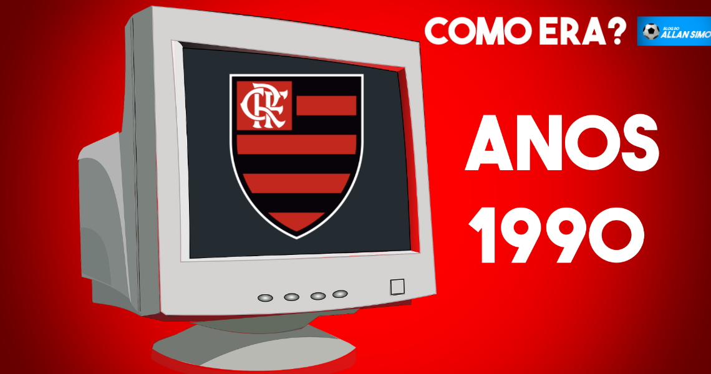
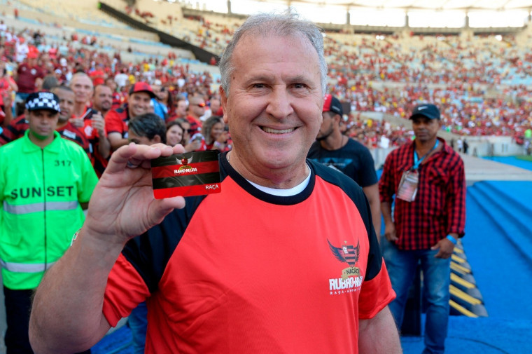

Em 1996, o clube lançou seu primeiro site oficial. E o Blog do Allan Simon viajou no tempo para conhecer a página rubro-negra naquela época. Para fazer essa viagem, recorremos ao Wayback Machine, um serviço que armazena mais de 449 bilhões de páginas da internet ao longo das últimas três décadas.
Em épocas mais modestas de conhecimento e possibilidades de arquivamento na “rede mundial de computadores”, tampouco os clubes de futebol tinham experiência com comunicação. E é por isso que o Flamengo terceirizava a sua página a uma empresa chamada Nabla.
A Nabla é uma empresa fundada em 1995 e que ainda aparece ativa em seu CNPJ, com sede no Rio de Janeiro. Foi também a desenvolvedora do primeiro site do Palmeiras. O resultado dessa volta ao passado para conhecer em detalhes a página do Flamengo na web você confere no vídeo abaixo:
O Flamengo lançou na tarde desta terça-feira seu plano de sócio-torcedor. O projeto Nação Rubro-Negra é uma parceria entre o clube e a Ambev. Com ele, os torcedores terão à disposição seis planos que custam entre R$ 39,90 e R$ 199,90, e não dão direito a ingressos. Os membros dos planos terão prioridade na compra de ingressos com descontos.
